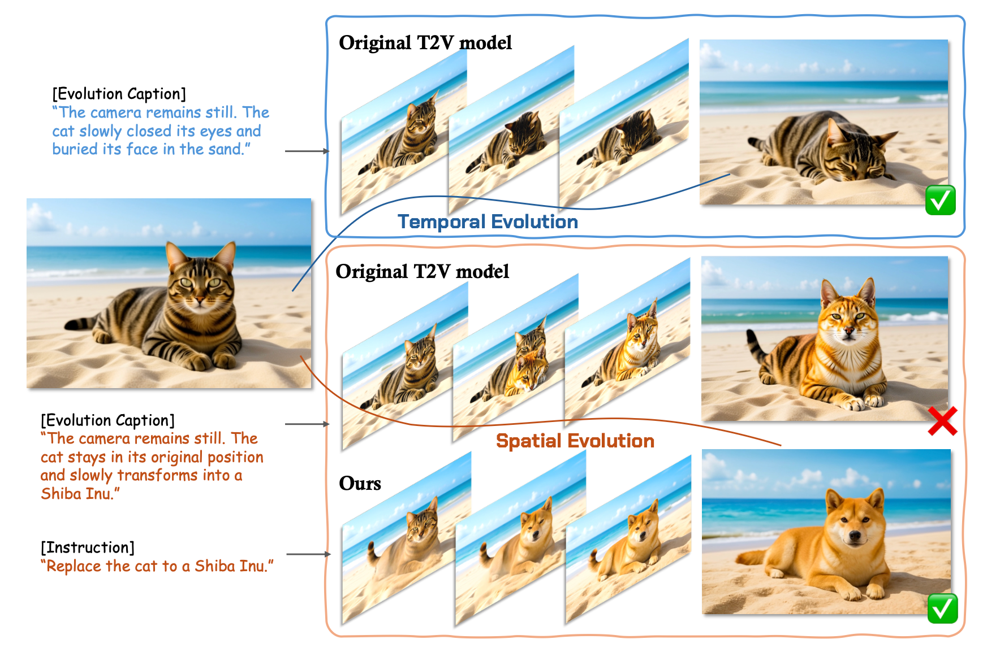
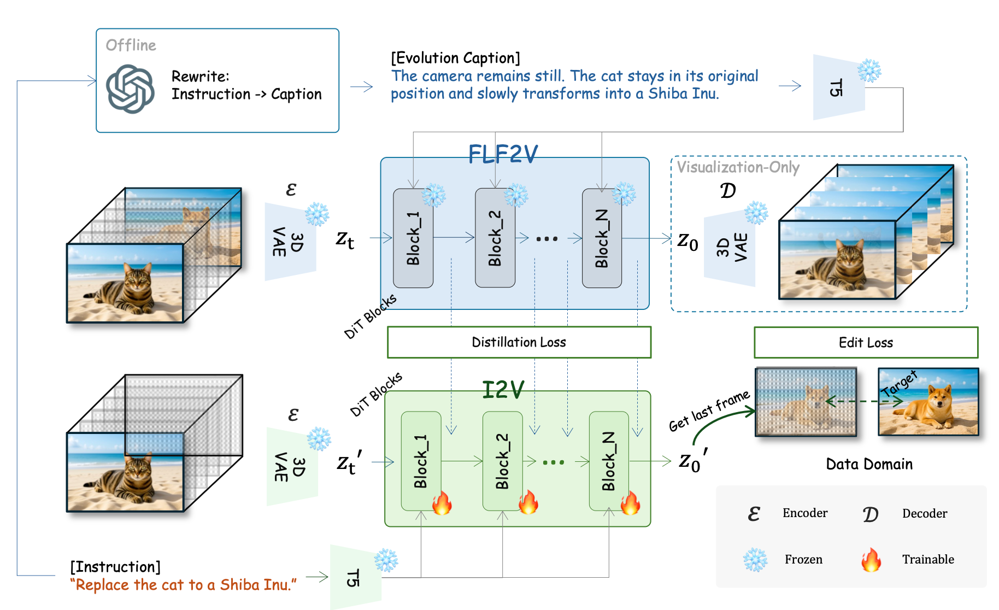
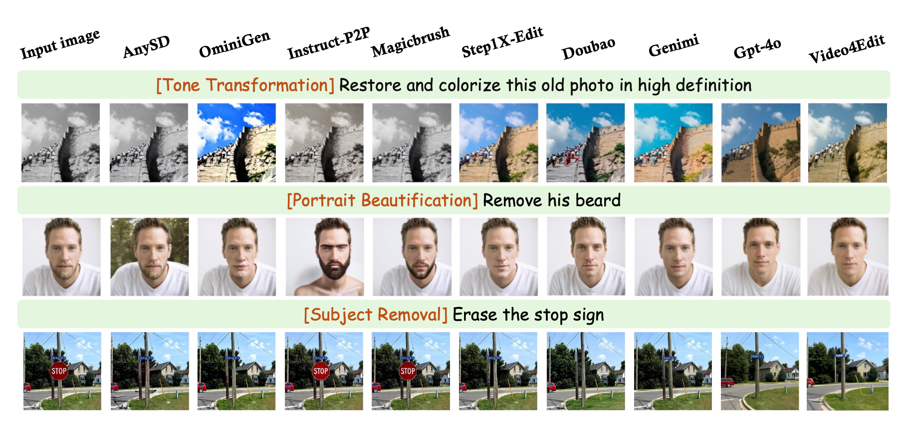
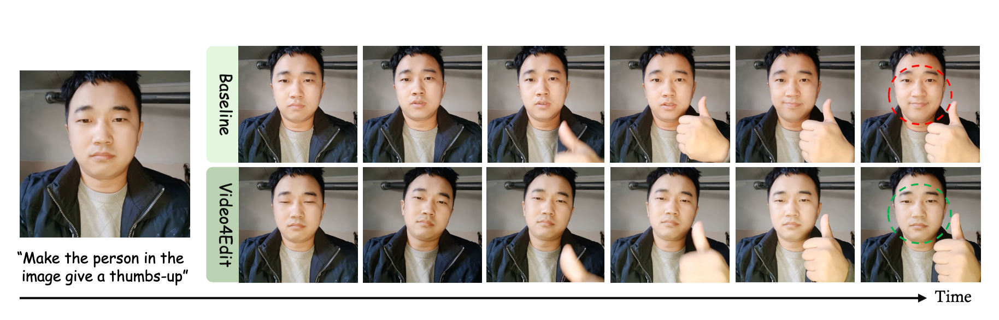
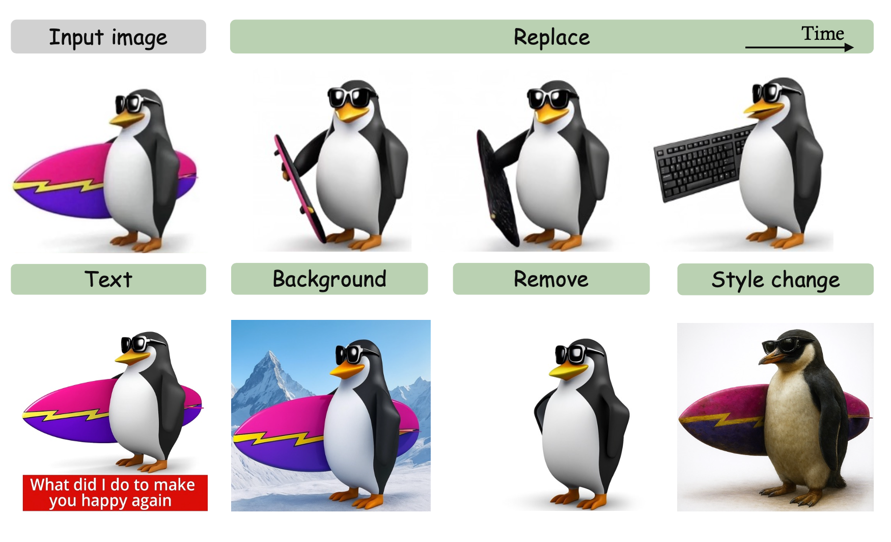

We observe that recent advances in multimodal foundation models have propelled instruction-driven image generation and editing into a genuinely cross-modal, cooperative regime. Nevertheless, state-of-the-art editing pipelines remain costly: beyond training large diffusion/flow models, they require curating massive high-quality triplets of {instruction, source image, edited image} to cover diverse user intents. Moreover, the fidelity of visual replacements hinges on how precisely the instruction references the target semantics. We revisit this challenge through the lens of temporal modeling: if video can be regarded as a full temporal process, then image editing can be seen as a degenerate temporal process. This perspective allows us to transfer single-frame evolution priors from video pre-training, enabling a highly data-efficient fine-tuning regime. Empirically, our approach matches the performance of leading open-source baselines while using only about one percent of the supervision demanded by mainstream editing models.

We view image edits through a temporal lens and categorize them into two families: temporal evolution (state changes over time with minimal spatial re-layout) and spatial evolution (structural reconfiguration). After rewriting the instruction into an evolution-style caption, a video-pretrained T2V model can often perform temporal- evolution edits in a zero-shot manner (though tasks such as replace still need additional consistency constraints), while spatial-evolution edits remain challenging. We find that a light fine-tuning of the video-pretrained model suffices to handle both families, enabling general-purpose image editing.

We formulate image editing as a degenerate temporal process and adopt a teacher–student framework. The teacher (Wan2.1 FLF2V-14B) receives the source image as the first frame and the edited image as the last frame, guided by an offline evolution prompt distilled from the instruction, to roll out temporally coherent intermediate states. The student (Wan2.1 I2V-14B-720P) takes only the source image and instruction, learning from teacher signals to produce the edited result in a few steps at inference.

A Comparative Illustration of Our Method, Open-Source Approaches, and Commercial Systems.

Comparison with native I2V baseline. Even in zero-shot scenarios where the native I2V model can generate plausible edits, it often introduces inconsistencies in non-edit regions (e.g., background artifacts, color shifts, structural distortions). Video4Edit maintains better consistency in non-edit regions through explicit supervision and distillation-based training.

Multi-task support. Our method handles diverse edit- ing tasks including subject addition, removal, replacement, back- ground change, color alteration, and style transfer, demonstrating the versatility of our temporal-evolution framework.
Replace the text 'TRAIN' with 'PLANE'.
Restore and colorize this old photo in high definition.
Remove his beard.
Replace background with snowy mountain.
Erase the stop sign.
Transform to sketch style.
@misc{li2025video4editviewingimageediting,
title={Video4Edit: Viewing Image Editing as a Degenerate Temporal Process},
author={Xiaofan Li and Yanpeng Sun and Chenming Wu and Fan Duan and YuAn Wang and Weihao Bo and Yumeng Zhang and Dingkang Liang},
year={2025},
eprint={2511.18131},
archivePrefix={arXiv},
primaryClass={cs.CV},
url={https://arxiv.org/abs/2511.18131},
}